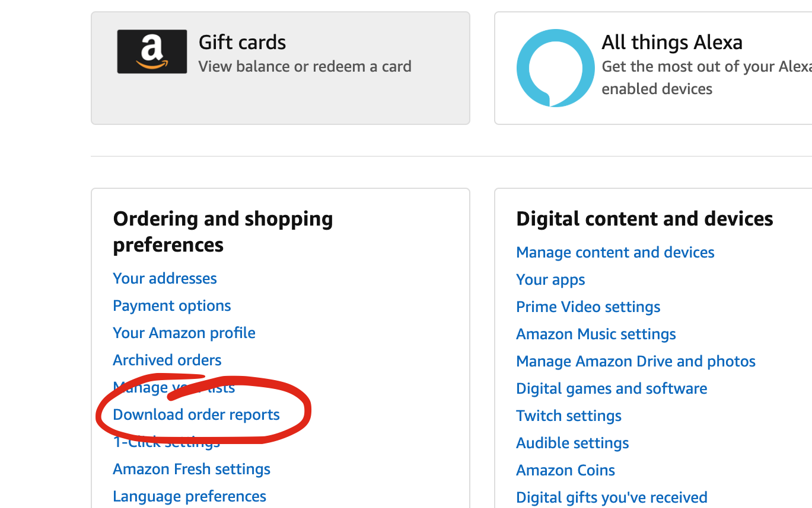
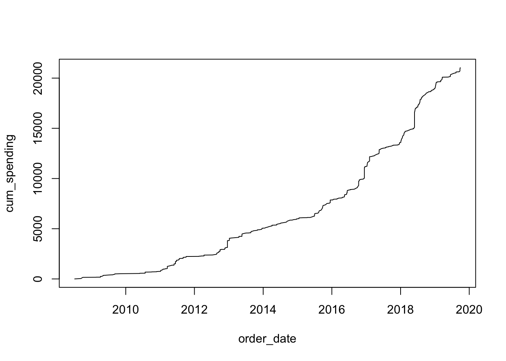
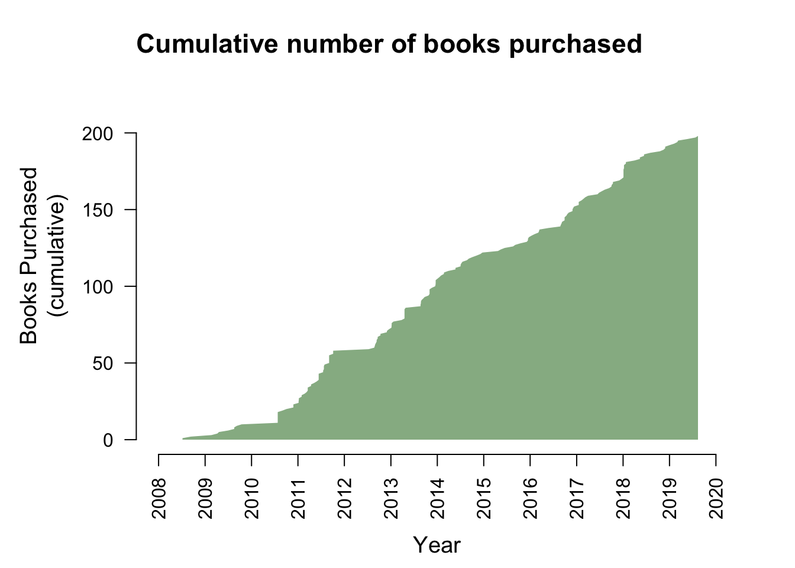
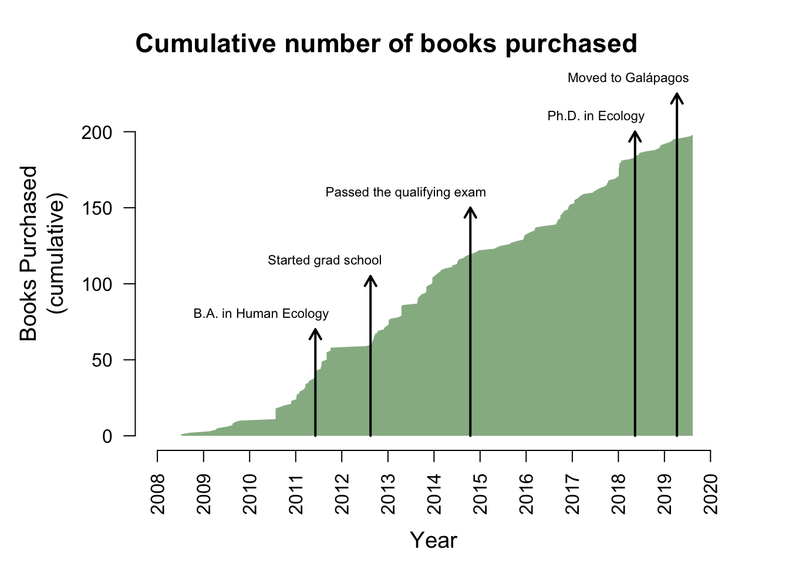

I want to learn a bit more about myself so I realized, why not “scrape” my own personal data and see what I can learn or at least visualize. My first foray will be into studying my Amazon web purchases. For better or for worse, Amazon has made it incredibly easy to purchase anything I need. But it all began with books. So lets take a look at the data I can “scrape” on my book purchase history. I say “scrape,” but it’s all readily available to download from my Amazon user account. I just went to my Amazon Account page, clicked on “Download order reports,” and selected a date range that included my entire Amazon history.

First, I just need to upload some important packages and functions I use later
library(tidyverse) # Best library for data wrangling
# Custom function for plotting transparent colors:
t_col <- function(color, percent = 50) {
rgb.val <- col2rgb(color)
t.col <- rgb(rgb.val[1], rgb.val[2], rgb.val[3], max = 255, alpha = (100-percent)*255/100)
invisible(t.col)
}Then I uploade these data to R:
## # A tibble: 622 x 36
## `Order Date` `Order ID` Title Category `ASIN/ISBN` `UNSPSC Code` Website
## <chr> <chr> <chr> <chr> <chr> <dbl> <chr>
## 1 7/7/08 058-08218… Log … Paperba… 014004261X 55101500 Amazon…
## 2 9/11/08 103-85256… Foun… Paperba… 226705943 55101500 Amazon…
## 3 10/1/08 102-66135… Garm… Wireles… B000PDR230 49000000 Amazon…
## 4 2/20/09 103-27488… Tomb… Home B00135DJQ8 60121500 Amazon…
## 5 2/20/09 103-27488… Remb… Paperba… 486241602 55101500 Amazon…
## 6 4/7/09 103-01892… Niji… Kitchen B000KNNKKE 60120000 Amazon…
## 7 4/7/09 103-81047… Eart… Paperba… 716784904 55101500 Amazon…
## 8 4/20/09 103-62819… Dino… Paperba… 312104561 55101500 Amazon…
## 9 5/6/09 103-28285… Shur… Electro… B00006I5SB 60131401 Amazon…
## 10 5/6/09 103-95296… TCC … Electro… B000J46TFW 52161547 Amazon…
## # … with 612 more rows, and 29 more variables: `Release Date` <chr>,
## # Condition <chr>, Seller <chr>, `Seller Credentials` <chr>, `List Price Per
## # Unit` <chr>, `Purchase Price Per Unit` <chr>, Quantity <dbl>, `Payment
## # Instrument Type` <chr>, `Purchase Order Number` <lgl>, `PO Line
## # Number` <lgl>, `Ordering Customer Email` <chr>, `Shipment Date` <chr>,
## # `Shipping Address Name` <chr>, `Shipping Address Street 1` <chr>, `Shipping
## # Address Street 2` <chr>, `Shipping Address City` <chr>, `Shipping Address
## # State` <chr>, `Shipping Address Zip` <chr>, `Order Status` <chr>, `Carrier
## # Name & Tracking Number` <chr>, `Item Subtotal` <chr>, `Item Subtotal
## # Tax` <chr>, `Item Total` <chr>, `Tax Exemption Applied` <lgl>, `Tax
## # Exemption Type` <lgl>, `Exemption Opt-Out` <lgl>, `Buyer Name` <chr>,
## # Currency <chr>, `Group Name` <lgl>As you can see, there are a lot of data here and I definitely didn’t need all the columns. So let’s clean this up a bit.
# First select the columns I want to keep and rename them:
amazon_clean <- select(amazon_raw,
order_date=`Order Date`,
category=Category,
title=Title,
cost=`Item Total`) %>%
# Then convert the cost with '$' sign into numeric,
# convert the date into Date format, the category
# into a factor, sort everything by date, and finally
# calculate cumulative spending:
mutate(cost = as.numeric(gsub("\\$","",cost)),
order_date = as.Date(order_date, format="%m/%d/%y"),
category=as.factor(category),
cum_spending = cumsum(cost))
amazon_clean## # A tibble: 622 x 5
## order_date category title cost cum_spending
## <date> <fct> <chr> <dbl> <dbl>
## 1 2008-07-07 Paperback Log from the 'Sea of Cortez,' … 1.95 1.95
## 2 2008-09-11 Paperback Foundations of Ecology: Classi… 36 38.0
## 3 2008-10-01 Wireless Phon… Garmin eTrex Venture HC High-I… 117 155.
## 4 2009-02-20 Home Tombow MONO Professional Drawi… 11.0 166.
## 5 2009-02-20 Paperback Rembrandt Landscape Drawings (… 6.95 173.
## 6 2009-04-07 Kitchen Niji Waterbrush Small 5.25 178.
## 7 2009-04-07 Paperback Earth's Climate: Past and Futu… 68.6 247.
## 8 2009-04-20 Paperback Dinosaurs in the Attic: An Exc… 4.99 252.
## 9 2009-05-06 Electronics Shure M97xE High-Performance M… 69.1 321.
## 10 2009-05-06 Electronics TCC TC-400G/L Phono Preamp, Pr… 29.5 350.
## # … with 612 more rowsNow that’s more like it. A nice clean dataframe to work with.
Now for a quick plot to see some results:
# Plot cumulative spending by order date:
plot(data=amazon_clean, cum_spending~order_date, type="l") 
Interesting… Not a final figure, but interesting to notice there were times when I was buying more and times when I wasn’t buying as much. But I want to look at books specifically. I know this doesn’t account for all book purchases, but after 2010 when I first started my Prime membership (yay for free 2-day shipping!), I’m sure almost all of my book purchases came from Amazon.
For now, I just want to extract the history of how many books I purchased over time
amazon_books <- filter(amazon_clean,
category %in% c("Paperback","Staple Bound","Pamphlet",
"Hardcover","Mass Market Paperback",
"Perfect Paperback")) %>%
# and add in a column for the cummulative total number of books purchased:
mutate(cum_spending = cumsum(cost),
cum_total = cumsum(cost>=0))Now, I’ll plot a nicer figure to show my book purchase history as well as adding in some markers on some significant moments in my life.
dat <- amazon_books # just change the variable name to make it easier to write
# prepare useful variables for plotting parameters:
years <- unique(year(dat$order_date))
years <- c(years,"2020")
jan1year <- as.Date(paste(years,01,01,sep="-"))
total=nrow(dat)
par(mai=c(1,1.2,.5,.5)) # plotting parameters
plot(data=dat, cum_total~order_date, type="n", axes=F, ylab="",xlab="", xlim=c(min(jan1year),as.Date("2020-01-01")),
ylim=c(0,240))
# create the axes to my specifications:
axis(1, at=jan1year,labels=years, las=2, cex=.5, cex=.5)
axis(2, at=seq(0,200,50),labels=seq(0,200,50), las=2)
# add axis and main labels:
mtext("Year",side=1, line=3.5, cex=1.2)
mtext("Books Purchased\n(cumulative)",side=2, line=3, cex=1.2)
mtext(side=3, cex=1.4,"Cumulative number of books purchased", font=2, adj=0)
# plot my cumulative total books as a filled shape:
polygon(x=c(dat$order_date, rev(dat$order_date)), y=c(dat$cum_total,rep(0,total)),
border=F, col=t_col("darkgreen",50))
Great! Now just add in a few important moments in my life
# gradauated undergrad
arrows(x0=as.Date("2011-06-06"), x1=as.Date("2011-06-06"), y0=0, y1=70, length=.1, lwd=2)
text("B.A. in Human Ecology", x=as.Date("2011-06-06"), y=80, adj=.9, cex=.7)
# started grad school
arrows(x0=as.Date("2012-08-16"), x1=as.Date("2012-08-16"), y0=0, y1=105, length=.1, lwd=2)
text("Started grad school", x=as.Date("2012-08-16"), y=115, adj=.9, cex=.7)
# passed qualifying exam
arrows(x0=as.Date("2014-10-16"), x1=as.Date("2014-10-16"), y0=0, y1=150, length=.1, lwd=2)
text("Passed the qualifying exam", x=as.Date("2014-10-16"), y=160, adj=.9, cex=.7)
# graduated grad school
arrows(x0=as.Date("2018-05-13"), x1=as.Date("2018-05-13"), y0=0, y1=200, length=.1, lwd=2)
text("Ph.D. in Ecology", x=as.Date("2018-05-13"), y=210, adj=.9, cex=.7)
# moved to Galapagos
arrows(x0=as.Date("2019-04-10"), x1=as.Date("2019-04-10"), y0=0, y1=225, length=.1, lwd=2)
text("Moved to Galápagos", x=as.Date("2019-04-10"), y=235, adj=.9, cex=.7)
And voila!
Copyright © 2020 Luka Negoita